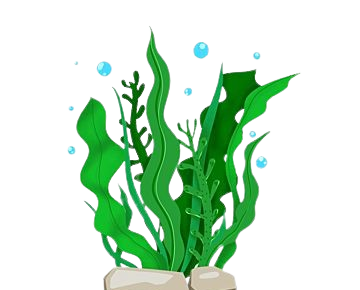
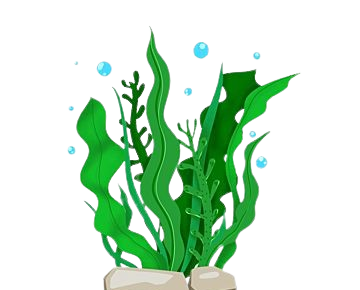
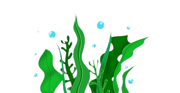
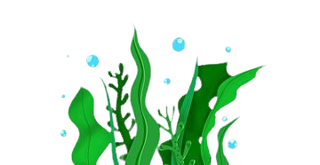

 



O momento que a praia fica mais poluida é após datas comemorativas, segundo Trashin (2023), após o Réveillon de 2021 do Rio de Janeiro, a prefeitura de Rio de Janeiro recolheu 320 TONELADAS de lixos deixados na areia.

O lixo que é jogado na praia acaba indo para o mar, então jogue o lixo na lixeira, assim você ajudará as pessoas e a vida marinha!

O plástico é o resíduo que mais polui a praia e o mar, segundo Evanildo da Silveira (23 de janeiro 2018), mais de 95% dos lixos encontradas na praia são compostos por plástico!

A poluição na praia é um problema problema que vem de tempos em tempos presente na nossa sociedade, que fica cada dia mais grave e abundante, por conta dos humanos. Essa poluição nas praias prejudica muito o meio ambiente e em consequência disso nossa sociedade também. Segundo o Grupo de Estudos de Mamíferos Aquáticos do Rio Grande do Sul (10 junho de 2022, 37° parágrafo do site: Extra Classe) nas 148 aves oceânicas encontradas mortas na costa do estado ou que morreram no centro de recuperação do Ceclimar e que foram dissecadas pelo pesquisador, havia 946 resíduos plásticos nas carcaças. Segundo a bióloga marinha Camila Rigon (10 de junho de 2022, 38° parágrafo do site: Extra Classe) dissecou 42 tartarugas verdes na costa gaúcha. Encontrou 4.611 resíduos de lixo (87% plástico). No animal que mais ingeriu lixo, foram contabilizados 742 resíduos. Essa espécie de tartaruga chega jovem ao estado, com 28,2 a 62 centímetros e, quando adulta, pode atingir um metro e 40 centímetros de comprimento e pesar 230 quilos de massa corporal.
A poluição das praias acontece muitas vezes por conta que as pessoas deixam seu lixo na praia, por exemplo, latinhas de cerveja, copos descartáveis, pratos descartáveis ou ainda, deixando cigarros utilizados. Durante datas festivas, como, carnaval e ano novo, as praias costumam ficar ainda mais poluídas por causa da grande quantidade de pessoas, Também acontece em momentos de lazer de famílias que deixam o lixo na areia.